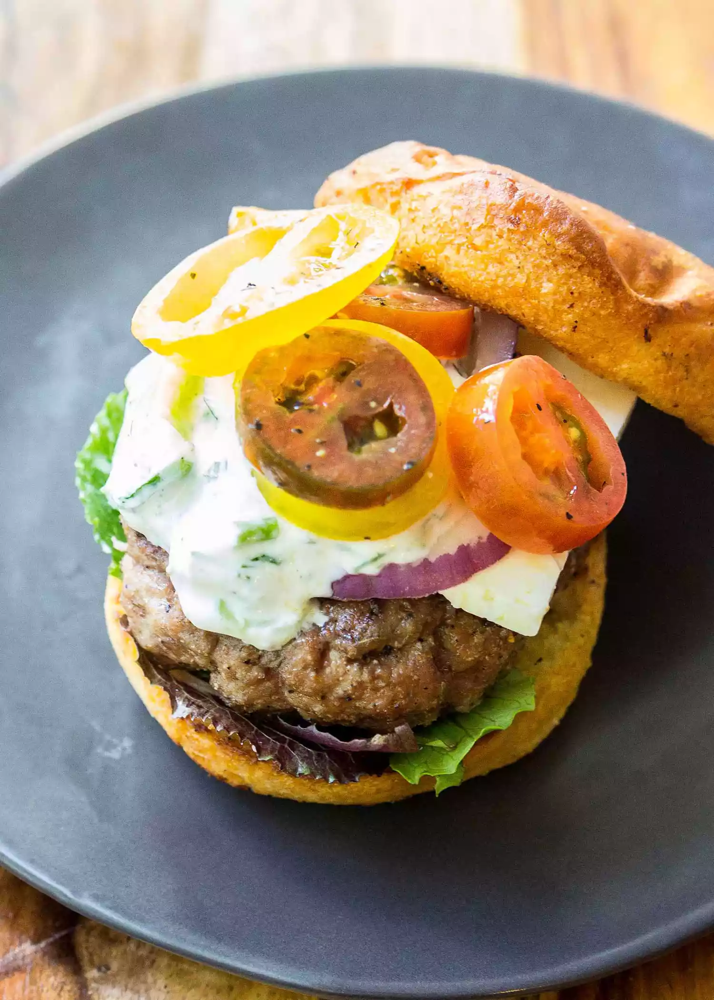

Greek lamb burger with Tzatziki sauce

Description
Mix up your cookout with this easy summer recipe. Grilled
lamb burgers with homemade tzatziki cucumber sauce will
impress your guests.
Ingredients
For the Tzatziki:
- 1 English cucumber, thinly sliced
- 1/2 teaspoon kosher salt, plus more to taste
- 2 cups plain Greek yogurt (full fat is best here)
- 1/3 cup lightly packed chopped fresh herbs
(I used equal amounts of mint, parsley, and dill)
- 1 tablespoon white wine vinegar
- 3 cloves chopped garlic
For the lamb burgers:
- 1 tablespoon dried onion granules
- 1 tablespoon dried garlic granules or powder
- 1/4 teaspoon dried lemon peel, optional
- 1/8 teaspoon dried oregano
- 1/4 teaspoon kosher salt
- 1/4 teaspoon freshly ground black pepper
- 1 1/2 pounds ground lamb
(or a combination of beef and lamb)
- 4 burger buns
To serve:
- Sliced tomatoes
- Lettuce
- Crumbled feta
- Red onion
- Tzatziki sauce
Steps
- Make the tzatziki:
Salt the cucumber slices with about 1/2 teaspoon salt
and place in a sieve over a bowl to drain. Refrigerate
for 1 hour or up to 24 hours, occasionally turning
cucumbers. (If you need to prepare the tzatziki right
away, salt the cucumbers for just 10 minutes, then
squeeze out excess moisture with a clean tea towel.)
In a large bowl, mix cucumbers, yogurt, herbs, vinegar,
and garlic. Stir to combine. Taste and season with salt
if needed.
This step can be done up to 3 days before serving.
- Combine spices:
Whisk together the dried onion, dried garlic, dried
lemon peel, dried oregano, salt, and pepper in a small
bowl. Set aside.
- Shape the lamb burgers:
Sprinkle the ground lamb with 2 teaspoons of the spice
mix and gently work it into the meat with your finger
tips or a spatula; try not to over-mix the meat or
compact it too much as you work in the spices.
Turn the seasoned meat out on a work surface and form
into four (6 ounce) patties. Press a shallow dimple in
the center of each patty to help the patties cook evenly
and prevent them from forming domes in the middle.
- Season and rest the burgers:
Sprinkle additional seasoning onto both sides of the
patties. Rest on counter for 20 to 30 minutes to allow
burgers to come to room temperature.
- Meanwhile, prepare your grill:
If you have a gas grill, preheat at high temperature for
at least 10 minutes with the lid closed. For charcoal
grills, fill a grill chimney with charcoal and light it.
When the coals are hot (they should be covered with a
layer of fine gray ash) empty the coals into the grill.
Set the grate in place and cover the grill. Heat for 5
minutes.
- Grill the burgers:
When your grill is ready, lightly brush the grates with
oil. Add the burgers and close the grill. Cook the
burgers to your desired doneness, flipping halfway
through cooking. (Cook 3 to 4 minutes on each side for
medium rare, or to 145°F.)
- Finish and serve:
Rest your lamb burgers for 3 minutes while you toast the
buns on the grill. Then serve immediately with tzatziki
sauce and other toppings.